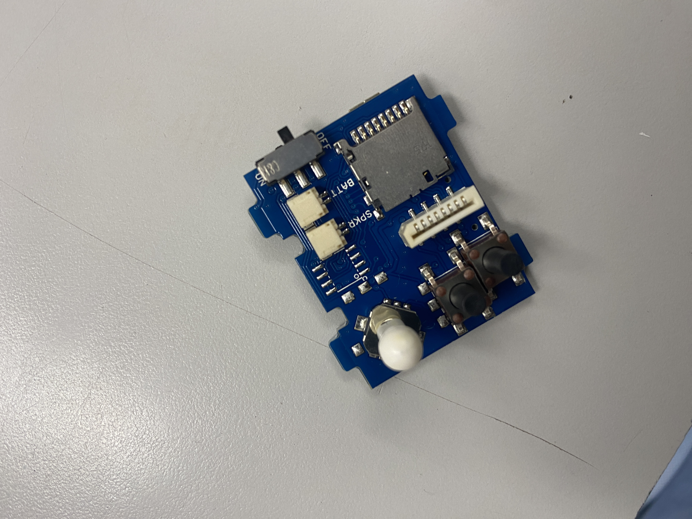
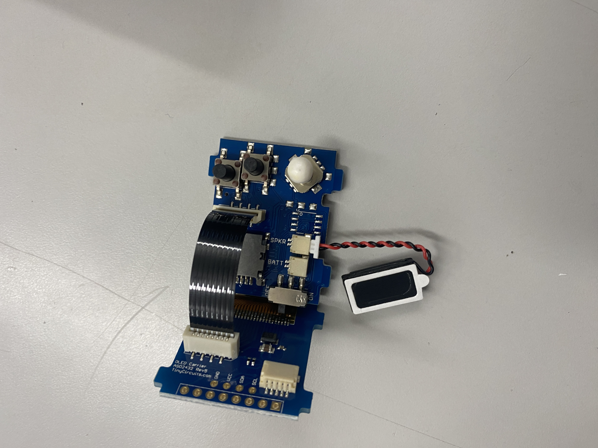
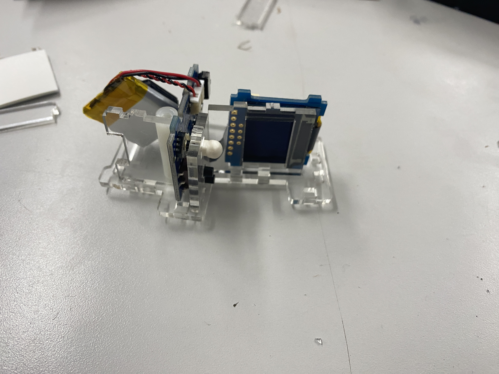

Tiny Arcade
Assembly
Today, I fully built and assembled the Tiny Arcade kit. The kit consisted of a bunch of small plastic parts which would be assembled together to create a small arcade machine. The acrylic was cut pretty roughly, however, so picking the pieces apart took some time. The largest problem, by far, was that the build had structural integrity issues through much of the assembly process due to only being held together by a single screw and would fall apart whenever it was turned. I solved this problem through having someone else assist me in holding the arcade as I pushed the pieces together. After all the pieces were in, the arcade was a lot more stable.

I then attached the speaker.

Here are all the acrylic pieces laid out before assembly:

Next, I assembled the first side of the arcade, along with attaching the battery and the screw.

I then put the second side of the arcade machine in, allowing me to fully screw both sides together.

This is what the arcade looks like after assembling the rest of the acrylic pieces:

Final step: stickers!

Adding Games
The base arcade came loaded with only 3 games on it. However, the arcade is able to support other games through a micro SD card. The instructions for doing so can be found on the TinyCircuits website here.
My regular computer didn't have either an SD card or microSD port so I had to switch to a second computer. After that, I downloaded the other games from the TinyCircuits website.